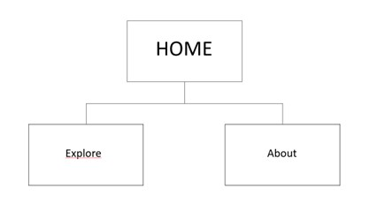
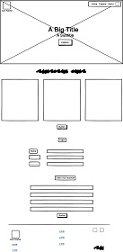
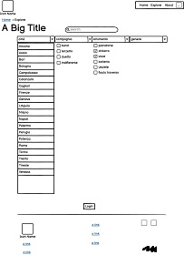
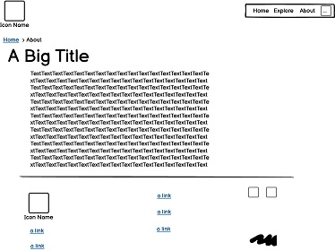
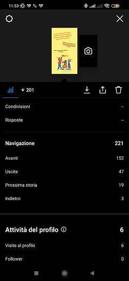
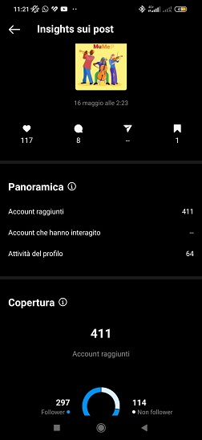
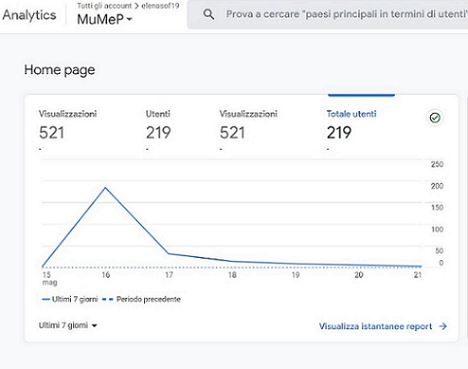
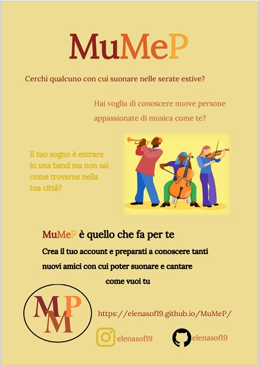

MuMeP è un sito d’incontri per musicisti: chiunque stia cercando un nuovo membro per la sua band o una o più persone disposte a suonare insieme anche solo per una giornata può trovarlo qui.
MuMeP è il primo sito web italiano completamente gratuito che permette a persone di tutte le età di incontrarsi e fare musica insieme, selezionando gli altri utenti in base a città, strumento e genere musicale.
Project Management Plan
BENCHMARKING
Obiettivi
Il progetto MuMeP punta alla creazione di una piattaforma gratuita online attiva in Italia tramite la quale sia possibile conoscere nuove persone con cui poter suonare e cantare insieme accordandosi privatamente, senza quindi l’intermediazione di locali pubblici.
Target
Il target utente è chiunque viva in Italia, sappia suonare uno strumento o canti, sia desideroso di suonare in compagnia e che abbia familiarità con i siti d’incontri online.
Competitors
Vampr.me: applicazione d’incontri per musicisti attiva in Italia con versione limitata gratuita e versione premium a pagamento. L’interazione con gli altri utenti sull'app Vampr.me avviene stabilendo dei match con i profili che compaiono nella homepage.
jamkazam: sito d’incontri online per musicisti che vogliono suonare insieme a distanza
musicianfinder: sito d’incontri online per musicisti che vogliono entrare a far parte di una band e per band che cercano nuovi membri.
gohendrix.com: sito d’incontri gratuito per musicisti che vogliono trovare qualcuno con cui suonare insieme dal vivo accordandosi privatamente. Funziona attraverso una visualizzazione dei profili degli utenti in base a criteri di selezione soggettivi. È attivo solamente negli Stati Uniti.
STRUTTURA E LAYOUT
Rappresentazione grafica ad albero

Wireframe



Look and feel
La palette di colori è composta da tonalità calde sui toni del giallo, ocra, arancione e rosso sia per quanto riguarda lo sfondo, i bottoni, le cards sia per distinguere alcuni titoli o stati dei link.
Per quanto riguarda il testo scritto viene utilizzata la font sans-serif “Lato” per i titoli, i bottoni e i link; mentre la font serif “Lora” per i paragrafi e i testi più lunghi.
Nella homepage sono presenti delle card per spiegare sinteticamente ciò che è possibile fare con MuMeP e dei form per l'accesso all'account utente. Nella pagina Explore invece sono presenti una barra di ricerca e delle liste dropdown con check-box per permettere all'utente di cercare i profili più compatibili alle sue necessità in base a criteri di selezione soggettivi.
LINGUAGGI E STRUMENTI
I linguaggi web utilizzati sono HTML, CSS e Javascript.
Gli strumenti tecnologici utilizzati sono: Adobe color per la scelta della palette di colori; Google Fonts per la scelta delle font; Font Awesome per le icone; Favicon.ico Generator per la creazione del favicon; Bootstrap, W3 Docs e Codepen.io per alcuni elementi di grafica; PowerPoint per l’alberazione del sito; Balsamiq per il Wireframe; Google Analytics per tenere conto delle visualizzazioni del sito; Github per la pubblicazione.
Communication Strategy
BACKGROUND
Esistono diverse piattaforme con l’obiettivo di mettere in contatto locali e musicisti (come iLivemusic) o band e musicisti singoli (come musicianfinder e musofinder), ma ne esistono poche con l’obiettivo di mettere in contatto tra loro singoli musicisti per organizzare incontri privati e informali. Le tre maggiori piattaforme con questo obiettivo sono:
-Vampr.me: un’applicazione con un primo accesso gratuito ma con servizi avanzati disponibili solo a pagamento. Vampr.me poi permette all’utente una selezione solo tra i profili suggeriti dall’algoritmo dell’applicazione, ma non rende disponibile una barra di ricerca o una ricerca secondo criteri soggettivi;
-jamkazam: sito web che permette agli utenti di incontrarsi e suonare insieme ma solo in modalità virtuale, senza quindi dare la possibilità di organizzare incontri di persona;
-gohendrix.com: sito web che permette agli utenti di incontrarsi privatamente e fisicamente mettendo a disposizione una barra di ricerca e criteri di selezione dei profili come località, tipo di profilo, genere musicale e strumento. L’unica limitazione di gohendrix è che è funzionante solo negli Stati Uniti.
OBIETTIVI COMUNICATIVI
L'obiettivo di MuMep è rendere disponibile gratuitamente in Italia una piattaforma attraverso la quale si possano incontrare fisicamente nella propria città nuove persone appassionate di musica e suonare insieme a loro.
MuMeP, inoltre, cerca di agevolare il processo di ricerca dei profili in modo da permettere di trovare un partner musicale che soddisfi il più possibile le necessità di ognuno.
TARGET AUDIENCE E MESSAGGIO
Il sito si rivolge a chi ha voglia di fare musica insieme a persone nuove, incontrandosi fisicamemte e con una comunicazione diretta.
Nella maggior parte dei casi questo tipo di persone rientra nel gruppo demografico tra i 16 e i 30 anni, in quanto, in quella fascia d'età, si ha più voglia di passare il proprio tempo libero conoscendo persone nuove con le proprie stesse passioni.
Solitamente i giovani vengono raggiunti facilmente tramite i social media ma, attraverso delle produzioni grafiche da distribuire in città, è possibile raggiungere sia loro che la restante parte del target non facente parte della fascia demografica tra i 16 e i 30 anni.
Nel target secondario possono rientrare tutte quelle persone che hanno voglia di fare nuove conoscenze, anche se non hanno un interesse particolare per la musica.
Con MuMeP si spera di incoraggiare le persone a fare nuove esperienze, conoscere nuove persone e condividere la propria passione per la musica con gli altri.
PROMOZIONE
Il sito è promosso tramite social media: inviando il link nei gruppi WhatsApp e postando un post e una storia su Instagram.
Gli obiettivi prefissati sono: 100 visualizzazioni nella storia Instagram, 50 like al post Instagram e 100 visite al sito.
VALUTAZIONE DEI RISULTATI
Social media
La storia Instagram ha raggiunto e superato i risultati attesi in quanto è stata visualizzata da 201 persone.
Il post di Instagram ha raggiunto e superato l'obiettivo posto in quanto ha ricevuto 117 like, 8 commenti ed è stato salvato una volta.
Il numero di visualizzazioni al sito ha superato l'obiettivo posto in quanto il sito di MuMeP ha ricevuto 521 visualizzazioni da un totale di 219 utenti.



Volantini
Per la promozione del sito al di fuori dei social, invece, è stata creata la grafica per dei volantini da distribuire in città.
